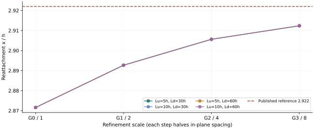
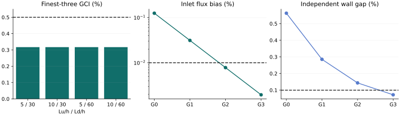

COMACBENCH / 原生 CFD 证据 / 第四档研究
Re=100 已过门，可以开展 Re=200 研究
四档网格、四组域长度；入口流量和近壁处理独立交叉核验。步高 h=10 mm，Re 按名义平均入口速度 1 m/s 和 2h 定义，实际积分偏差单独列出。
全部预声明门槛通过。
入口、近壁检查与网格 GCI 各自判定；现有 benchmark 的 10% 容差尚未改动。
查看 Re=200 扩展研究：16/16 原生计算完成；独立复核后科学门槛未通过，已反馈零点归属问题。Re=100 判定快照保持原样。
最细三档网格误差估计0.3170%最大 GCI，门槛 ≤ 0.5%
第四档最大入口偏差0.001953%门槛 ≤ 0.01%
第四档最大近壁差异0.07199%门槛 ≤ 0.1%，随加密下降
所选零点的域长度影响0.0000035%门槛 ≤ 0.25%
先读这个结果
① 网格是否够细增加 G3 后，用 G1、G2、G3 重算离散不确定度；保留 G0、G1、G2 供比较。
② 输入是否一致从实际网格面独立积分，并与原生通量比较。公开标出面中心采样带来的有效 Re 偏差。
③ 近壁是否可信检查层流、无滑移、二维边界和实际壁距，再用二次速度梯度交叉核验零点。
四档加密后的再附着位置
四条域长度曲线非常接近。靠近论文参考线不等于通过网格误差门槛。

| 上游 / 下游域长 | 原三档 GCI | 最细三档 GCI | 新观察阶 p | 网格门槛 |
|---|
| 5h / 30h | 0.8842% | 0.3170% | 0.938 | 通过 |
| 10h / 30h | 0.8842% | 0.3170% | 0.938 | 通过 |
| 5h / 60h | 0.8842% | 0.3170% | 0.938 | 通过 |
| 10h / 60h | 0.8842% | 0.3170% | 0.938 | 通过 |
入口和近壁：独立检查什么

入口面中心采样偏差依次为 0.125%、0.03125%、0.0078125%、0.001953125%。配对算例将 G2 改为精确面平均入口，再附着位置相对原算例变化 0.006034%。该算例仅用于诊断，没有混入原网格族。
壁面使用层流无滑移条件；二次重构采用实际不等壁距。它与原生张量剪切并非同一定义，差值予以保留；正式 QoI 始终采用原生壁面剪切零点。
Re=100 前置核验：原三档独立检查 · 入口配对结果 · 短域桥接 · 长域桥接
展开 16 个算例和原生证据
| Lu / Ld | 网格 | 单元数 | x/h | 流量有效 Re | 近壁差异 | 原生有效性 | 核验材料 |
|---|
| 5 / 30 | G0 | 6,100 | 2.87157824 | 100.1250000 | 0.56269% | 有效 | 结果 · 证据 · 原生日志 |
| 5 / 30 | G1 | 24,400 | 2.89268432 | 100.0312500 | 0.28525% | 有效 | 结果 · 证据 · 原生日志 |
| 5 / 30 | G2 | 97,600 | 2.90563281 | 100.0078125 | 0.14358% | 有效 | 结果 · 证据 · 原生日志 |
| 10 / 30 | G0 | 6,600 | 2.87157828 | 100.1250000 | 0.56269% | 有效 | 结果 · 证据 · 原生日志 |
| 10 / 30 | G1 | 26,400 | 2.89268416 | 100.0312500 | 0.28525% | 有效 | 结果 · 证据 · 原生日志 |
| 10 / 30 | G2 | 105,600 | 2.90563272 | 100.0078125 | 0.14358% | 有效 | 结果 · 证据 · 原生日志 |
| 5 / 60 | G0 | 7,420 | 2.87157823 | 100.1250000 | 0.56269% | 有效 | 结果 · 证据 · 原生日志 |
| 5 / 60 | G1 | 29,680 | 2.89268426 | 100.0312500 | 0.28525% | 有效 | 结果 · 证据 · 原生日志 |
| 5 / 60 | G2 | 118,720 | 2.90563259 | 100.0078125 | 0.14358% | 有效 | 结果 · 证据 · 原生日志 |
| 10 / 60 | G0 | 7,920 | 2.87157827 | 100.1250000 | 0.56269% | 有效 | 结果 · 证据 · 原生日志 |
| 10 / 60 | G1 | 31,680 | 2.89268412 | 100.0312500 | 0.28525% | 有效 | 结果 · 证据 · 原生日志 |
| 10 / 60 | G2 | 126,720 | 2.90563254 | 100.0078125 | 0.14358% | 有效 | 结果 · 证据 · 原生日志 |
| 5 / 30 | G3 | 390,400 | 2.91239324 | 100.0019531 | 0.07199% | 有效 | 结果 · 证据 · 原生日志 |
| 10 / 30 | G3 | 422,400 | 2.91239322 | 100.0019531 | 0.07199% | 有效 | 结果 · 证据 · 原生日志 |
| 5 / 60 | G3 | 474,880 | 2.91239315 | 100.0019531 | 0.07199% | 有效 | 结果 · 证据 · 原生日志 |
| 10 / 60 | G3 | 506,880 | 2.91239314 | 100.0019531 | 0.07199% | 有效 | 结果 · 证据 · 原生日志 |
复跑与使用边界
新增算例从已保存的原生场映射初始化，GAMG 使用 DICGaussSeidel，最终松弛系数为 p=0.3、U=0.7；来源、网格及两组桥接验证保留。新算例采用更严的绝对残差与末两场稳定性门槛。
第四档采用 4 个 MPI 分区，数值设置保持一致。Re=100 短域与长域均通过同网格桥接；本组结果逐项核对重构后的单元速度、压力和底壁剪切。MPI 桥接核验 · 桥接分区重构核验 · 单次 100 步计时（计时仅代表该次测量）。
发散、收敛但未通过桥接及中止的探索尝试均保留，未进入正式网格结果。入口面积另用多边形面积向量与高斯积分交叉验证。
本次筛查容差候选为 ±2.5%，采用预声明的保守误差项求和规则。它不是统计置信区间，尚未写入 benchmark 评分。
这里验证二维层流后向台阶及 benchmark 的证据链。结果不能直接代表飞机工业工况验收、商业求解器能力或模型排名。
完整机器可读判定 · 下载数值 CSV · 冻结协议 · 事前门槛说明